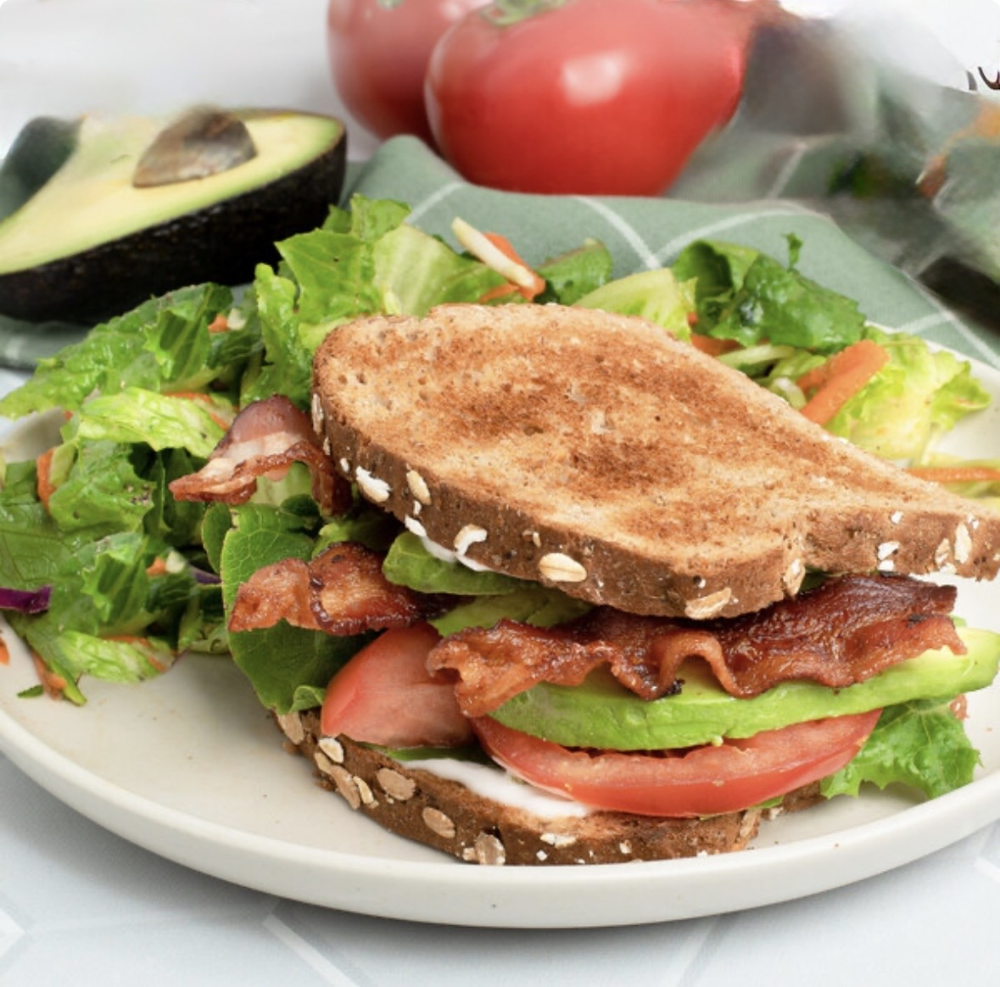

Ingredients
AVOCADO AIOLI
- 1 medium ripe avocado
- 1 garlic clove
- 1 tsp. Dijon mustard
- 1 tsp. lemon zest
- 2-3 Tbsp. lemon juice, plus more to taste
- ¼ tsp. table salt, plus more to taste 6 Tbsp. olive oil
- 4 slices bacon
- 6 Tbsp. avocado aioli
- 4 slices of sandwich bread
- 1 cup loosely packed lettuce
- 2 medium tomatoes, cut into ½-inch thick slices
- 1 medium avocado, cut into ½-inch thick slices
Instructions
AVOCADO AIOLI
- To make the avocado aioli, place avocado, garlic, mustard, lemon zest and juice, and salt in a mason jar and blend with an immersion blender until smooth. Slowly drizzle in oil while continuing to blend until the mixture is light and fluffy. Adjust seasoning with more salt and lemon juice, as desired. Store in an airtight container for up to 4 days in the refrigerator.
- To make the sandwich, cook bacon until crispy (either on the stovetop in a large skillet over medium heat for about 8 minutes or in a 375F oven on a sheet tray for about 20 minutes). Drain on paper towels.
- Spread half the avocado aioli on a slice of toast, then top with half the lettuce, bacon, tomatoes and avocado and place another piece of toast on top. Repeat with remaining ingredients. Add a toothpick to hold sandwich together and serve immediately.